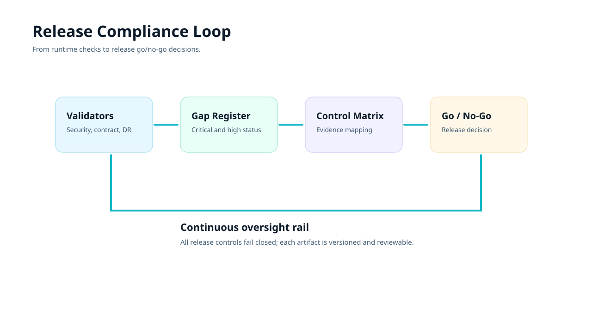

Regulatory control matrix
Maps release-critical controls to concrete logs and reports. Used for release board sign-off and oversight responses.
This hub consolidates regulatory controls, vendor risk posture, gap status, and release-governance checkpoints so leadership teams can evaluate readiness with command-level evidence.
Each decision path references a control, an owner, and an evidence artifact. Missing evidence defaults to fail-closed behavior.
Maps release-critical controls to concrete logs and reports. Used for release board sign-off and oversight responses.
Tracks closure lifecycle for critical and high findings, including ownership, ETA, and validator outputs.
Vendor risk register captures BAA/DPA/SOC posture, exceptions, and quarterly review cadence.
